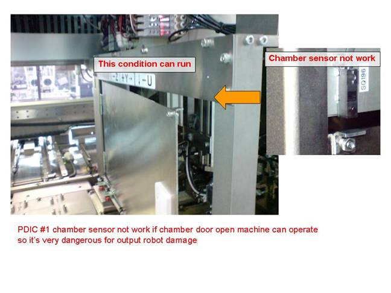

Service History
Subject: PD-EPH#1 "Chamber sensor not work"
Handler Model: PDIC(SDT, NS-7080W)
Controller: RC520
Date: 5 Aug 2008
Symptom
SDT found problem of PD-EPH#1 about chamber sensor not work.
This problem not effect to human safety because rear cover sensor is working as normal but if somebody forgot to close chamber door
It cause of output robot damage by hit with chamber cover.

Action
6 Aug 2008
Email to SDT
1) you do not see any green/red color? If totally no light, perhaps sensor is damage.
SDT replied that sensor no light.
2) If you can see green/red but no alarm, maybe it is just some setting.
In case of you can see green/red, meaning sensor functionality is ok,
I/O label is 196 so you see from SPEL I/O, under IN196 for Chamber Door Switch SQ196A & SQ196B, if have ON/OFF, means software no activate this sensor for check.
IN196 no ON/OFF, maybe the connector is in wrong port of I/O module.
Please let us know after you check. Just some check point to see if it is sensor damage or just setting.
20 Aug 2008
Troubleshooting using new sensor but the problem still persist. Chamber door exit sensor at Config.exe was unchecked.
Wiring check by comparing with PDIC #2 found no abnormalities. Data collected to feedback to Epson.
28 Aug 2008
SDT sent the following files in PDIC#1 & #2 to EPSON for analysis:
C:\ NS7000... log
C:\ NS7000... config
3 Sep 2008
Email by Asano, We found a difference of config settings.
PDIC#1 config settings . Temperature control = None -> please change to "Ambient"
PDIC#2 config settings . Temperature control = Ambient
Could you try to change this setting and confirm?
Cause